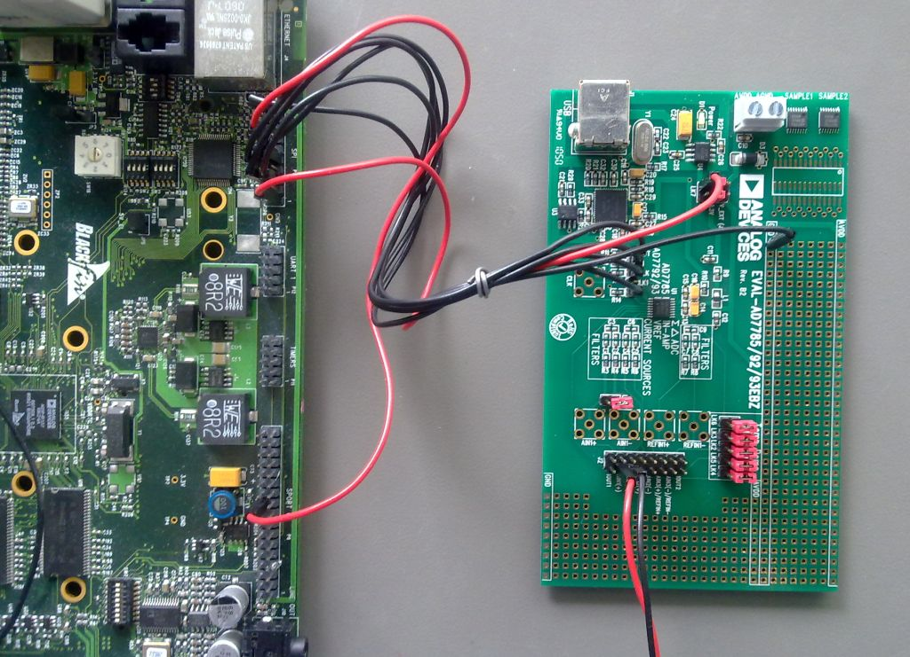

AD7793 IIO Low Power Sigma-Delta ADC Linux Driver¶
Supported Devices¶
Reference Circuits¶
Evaluation Boards¶
Description¶
This is a Linux industrial I/O (IIO) subsystem driver, targeting multi channel serial interface ADCs. The industrial I/O subsystem provides a unified framework for drivers for many different types of converters and sensors using a number of different physical interfaces (i2c, spi, etc). See IIO for more information.
Source Code¶
Status¶
| Source | Mainlined? |
|---|---|
| git | Yes |
Files¶
| Function | File |
|---|---|
| driver | drivers/iio/adc/ad7793.c |
| include | include/linux/platform_data/ad7793.h |
Example platform device initialization¶
The reference voltage may vary between boards and models. The platform_data for the device’s “struct device” holds this information.
/**
* enum ad7793_clock_source - AD7793 clock source selection
* @AD7793_CLK_SRC_INT: Internal 64 kHz clock, not available at the CLK pin.
* @AD7793_CLK_SRC_INT_CO: Internal 64 kHz clock, available at the CLK pin.
* @AD7793_CLK_SRC_EXT: Use external clock.
* @AD7793_CLK_SRC_EXT_DIV2: Use external clock divided by 2.
*/
enum ad7793_clock_source {
AD7793_CLK_SRC_INT,
AD7793_CLK_SRC_INT_CO,
AD7793_CLK_SRC_EXT,
AD7793_CLK_SRC_EXT_DIV2,
};
/**
* enum ad7793_bias_voltage - AD7793 bias voltage selection
* @AD7793_BIAS_VOLTAGE_DISABLED: Bias voltage generator disabled
* @AD7793_BIAS_VOLTAGE_AIN1: Bias voltage connected to AIN1(-).
* @AD7793_BIAS_VOLTAGE_AIN2: Bias voltage connected to AIN2(-).
* @AD7793_BIAS_VOLTAGE_AIN3: Bias voltage connected to AIN3(-).
* Only valid for AD7795/AD7796.
*/
enum ad7793_bias_voltage {
AD7793_BIAS_VOLTAGE_DISABLED,
AD7793_BIAS_VOLTAGE_AIN1,
AD7793_BIAS_VOLTAGE_AIN2,
AD7793_BIAS_VOLTAGE_AIN3,
};
/**
* enum ad7793_refsel - AD7793 reference voltage selection
* @AD7793_REFSEL_REFIN1: External reference applied between REFIN1(+)
* and REFIN1(-).
* @AD7793_REFSEL_REFIN2: External reference applied between REFIN2(+) and
* and REFIN1(-). Only valid for AD7795/AD7796.
* @AD7793_REFSEL_INTERNAL: Internal 1.17 V reference.
*/
enum ad7793_refsel {
AD7793_REFSEL_REFIN1 = 0,
AD7793_REFSEL_REFIN2 = 1,
AD7793_REFSEL_INTERNAL = 2,
};
/**
* enum ad7793_current_source_direction - AD7793 excitation current direction
* @AD7793_IEXEC1_IOUT1_IEXEC2_IOUT2: Current source IEXC1 connected to pin
* IOUT1, current source IEXC2 connected to pin IOUT2.
* @AD7793_IEXEC1_IOUT2_IEXEC2_IOUT1: Current source IEXC2 connected to pin
* IOUT1, current source IEXC1 connected to pin IOUT2.
* @AD7793_IEXEC1_IEXEC2_IOUT1: Both current sources connected to pin IOUT1.
* Only valid when the current sources are set to 10 uA or 210 uA.
* @AD7793_IEXEC1_IEXEC2_IOUT2: Both current sources connected to Pin IOUT2.
* Only valid when the current ources are set to 10 uA or 210 uA.
*/
enum ad7793_current_source_direction {
AD7793_IEXEC1_IOUT1_IEXEC2_IOUT2 = 0,
AD7793_IEXEC1_IOUT2_IEXEC2_IOUT1 = 1,
AD7793_IEXEC1_IEXEC2_IOUT1 = 2,
AD7793_IEXEC1_IEXEC2_IOUT2 = 3,
};
/**
* enum ad7793_excitation_current - AD7793 excitation current selection
* @AD7793_IX_DISABLED: Excitation current Disabled.
* @AD7793_IX_10uA: Enable 10 micro-ampere excitation current.
* @AD7793_IX_210uA: Enable 210 micro-ampere excitation current.
* @AD7793_IX_1mA: Enable 1 milli-Ampere excitation current.
*/
enum ad7793_excitation_current {
AD7793_IX_DISABLED = 0,
AD7793_IX_10uA = 1,
AD7793_IX_210uA = 2,
AD7793_IX_1mA = 3,
};
/**
* struct ad7793_platform_data - AD7793 platform data
* @clock_src: Clock source selection
* @burnout_current: If set to true the 100nA burnout current is enabled.
* @boost_enable: Enable boost for the bias voltage generator.
* @buffered: If set to true configure the device for buffered input mode.
* @unipolar: If set to true sample in unipolar mode, if set to false sample in
* bipolar mode.
* @refsel: Reference voltage selection
* @bias_voltage: Bias voltage selection
* @exitation_current: Excitation current selection
* @current_source_direction: Excitation current direction selection
*/
struct ad7793_platform_data {
enum ad7793_clock_source clock_src;
bool burnout_current;
bool boost_enable;
bool buffered;
bool unipolar;
enum ad7793_refsel refsel;
enum ad7793_bias_voltage bias_voltage;
enum ad7793_excitation_current exitation_current;
enum ad7793_current_source_direction current_source_direction;
};
static struct ad7793_platform_data ad7793_pdata = {
.clock_src = AD7793_CLK_SRC_EXT,
.unipolar = true,
.buffered = true,
.refsel = AD7793_REFSEL_INTERNAL,
};
Depending on the converter IC used, you may need to set the modalias accordingly, matching your part name. It may also required to adjust max_speed_hz. Please consult the datasheet, for maximum spi clock supported by the device in question.
static struct spi_board_info board_spi_board_info[] __initdata = {
## if defined(CONFIG_AD7793)
|| defined(CONFIG_AD7793_MODULE)
{
.modalias = "ad7793",
.max_speed_hz = 1000000, /* max spi clock (SCK) speed in HZ */
.bus_num = 0,
.chip_select = 3, /* CS, change it for your board */
.platform_data = &ad7793_pdata, /* No spi_driver specific config */
.mode = SPI_MODE_3,
.irq = IRQ_PF6,
},
## endif
};
static int __init board_init(void)
{
[--snip--]
spi_register_board_info(board_spi_board_info, ARRAY_SIZE(board_spi_board_info));
[--snip--]
return 0;
}
arch_initcall(board_init);
Adding Linux driver support¶
Configure kernel with “make menuconfig” (alternatively use “make xconfig” or “make qconfig”)
Note
The AD7793 Driver depends on CONFIG_SPI
Linux Kernel Configuration
Device Drivers --->
...
<*> Industrial I/O support --->
--- Industrial I/O support
...
Analog to digital converters --->
...
<*> Analog Devices AD7793 and similar ADCs driver
...
...
...
Hardware configuration¶
{kind=link}
Driver testing¶
Note
Hint
This specifies any shell prompt running on the target
root:/> **cd /sys/bus/iio/devices/**
root:/sys/bus/iio/devices> ls
device0 trigger0
root:/sys/bus/iio/devices> **cd iio:device0**
root:/sys/devices/platform/bfin-spi.0/spi0.3/iio:device0> **ls -l**
drwxr-xr-x 4 root root 0 Jan 4 09:29 device0:buffer0
-rw-r--r-- 1 root root 4096 Jan 4 09:30 in_voltage-in_voltage_scale
-r--r--r-- 1 root root 4096 Jan 4 09:30 in_voltage-in_voltage_scale_available
-r--r--r-- 1 root root 4096 Jan 4 09:30 in_voltage0-in_voltage0_raw
-r--r--r-- 1 root root 4096 Jan 4 09:30 in_voltage0-in_voltage0_shorted_raw
-r--r--r-- 1 root root 4096 Jan 4 09:30 in_voltage1-in_voltage1_raw
-r--r--r-- 1 root root 4096 Jan 4 09:30 in_voltage2-in_voltage2_raw
-r--r--r-- 1 root root 4096 Jan 4 09:30 in_voltage4_supply_raw
-rw-r--r-- 1 root root 4096 Jan 4 09:30 in_voltage4_supply_scale
-r--r--r-- 1 root root 4096 Jan 4 09:30 name
drwxr-xr-x 2 root root 0 Jan 4 09:30 power
-rw-r--r-- 1 root root 4096 Jan 4 09:30 sampling_frequency
-r--r--r-- 1 root root 4096 Jan 4 09:30 sampling_frequency_available
lrwxrwxrwx 1 root root 0 Jan 4 09:30 subsystem -> ../../../../../bus/iio
-r--r--r-- 1 root root 4096 Jan 4 09:30 in_temp0_raw
-rw-r--r-- 1 root root 4096 Jan 4 09:30 in_temp0_scale
drwxr-xr-x 2 root root 0 Jan 4 09:30 trigger
-rw-r--r-- 1 root root 4096 Jan 4 09:30 uevent
root:/sys/devices/platform/bfin-spi.0/spi0.3/iio:device0>
Show device name
Note
Hint
This specifies any shell prompt running on the target
root:/sys/devices/platform/bfin-spi.0/spi0.3/iio:device0> **cat name**
ad7793
Show available sampling frequencies / update rates
Note
Hint
This specifies any shell prompt running on the target
root:/sys/devices/platform/bfin-spi.0/spi0.3/iio:device0> **cat sampling_frequency_available**
470 242 123 62 50 39 33 19 17 16 12 10 8 6 4
Set sampling frequency / update rate
Note
Hint
This specifies any shell prompt running on the target
root:/sys/devices/platform/bfin-spi.0/spi0.3/iio:device0> **cat sampling_frequency**
10
root:/sys/devices/platform/bfin-spi.0/spi0.3/iio:device0> **echo 50 > sampling_frequency**
root:/sys/devices/platform/bfin-spi.0/spi0.3/iio:device0> **cat sampling_frequency**
50
root:/sys/devices/platform/bfin-spi.0/spi0.3/iio:device0>
Show supply voltage
Description: Shows the AVDD supply voltage
Note
Hint
This specifies any shell prompt running on the target
root:/sys/devices/platform/bfin-spi.0/spi0.3/iio:device0> **cat in_voltage4_supply_raw**
7817399
root:/sys/devices/platform/bfin-spi.0/spi0.3/iio:device0> **cat in_voltage4_supply_scale**
0.000418420
U = in_voltage4_supply_raw * in_voltage4_supply_scale = 7817399 * 0.000418420 = 3270.95608958 mV
Show available scales for differential input channels
Lists all available scales for the differential input pairs:
| ADC Input Pair | Channel name |
|---|---|
| AIN1(+) - AIN1(-) | in_voltage0-in_voltage0_raw |
| AIN2(+) - AIN2(-) | in_voltage1-in_voltage1_raw |
| AIN3(+) - AIN3(-) | in_voltage1-in_voltage1_raw |
| AIN1(-) - AIN1(-) | in_voltage0-in_voltage0_shorted_raw |
Setting these directly influences the ADC input range, by altering the GAIN amplifier.
Note
Hint
This specifies any shell prompt running on the target
root:/sys/devices/platform/bfin-spi.0/spi0.3/iio:device0> **cat in_voltage-in_voltage_scale_available**
0.000149010 0.000074500 0.000037250 0.000018620 0.000009310 0.000004650 0.000002320 0.000001160
Set scale for differential input channels
Scale to be applied to in_voltage0-in_voltage0_raw, in_voltage1-in_voltage1_raw, in_voltage2-in_voltage2_raw in order to obtain the measured voltage in millivolts. Allows the user to select one scale out of the available scales. If the written scale differs from the current scale. The driver performs full and zero offset calibration on all differential input channels.
Note
Hint
This specifies any shell prompt running on the target
root:/sys/devices/platform/bfin-spi.0/spi0.3/iio:device0> **cat in_voltage-in_voltage_scale**
0.000149010
root:/sys/devices/platform/bfin-spi.0/spi0.3/iio:device0> **echo 0.000074500 > in_voltage-in_voltage_scale**
root:/sys/devices/platform/bfin-spi.0/spi0.3/iio:device0> **cat in_voltage-in_voltage_scale**
0.000074500
Show channel in_voltage0-in_voltage0 measurement
Description: Raw unscaled voltage measurement
| ADC Input Pair | Channel name |
|---|---|
| AIN1(+) - AIN1(-) | in_voltage0-in_voltage0_raw |
| AIN2(+) - AIN2(-) | in_voltage1-in_voltage1_raw |
| AIN3(+) - AIN3(-) | in_voltage2-in_voltage2_raw |
| AIN4(+) - AIN4(-) | in_voltage3-in_voltage3_raw |
| AIN5(+) - AIN5(-) | in_voltage4-in_voltage4_raw |
| AIN6(+) - AIN6(-) | in_voltage5-in_voltage5_raw |
| AIN1(-) - AIN1(-) | in_voltage0-in_voltage0_shorted_raw |
Note
Hint
This specifies any shell prompt running on the target
root:/sys/devices/platform/bfin-spi.0/spi0.3/iio:device0> **cat in_voltage0-in_voltage0_raw**
6710665
U = in_voltage0-in_voltage0_raw * in_voltage-in_voltage_scale = 6710665 * 0.000149010 = 999.95619165 mV
Trigger management
Note
This driver only supports it’s own default trigger source ad7793-dev0
Note
Hint
This specifies any shell prompt running on the target
root:/sys/devices/platform/bfin-spi.0/spi0.3/device0> **cat trigger/current_trigger**
ad7793-dev0
Buffer management
Note
Hint
This specifies any shell prompt running on the target
root:/sys/devices/platform/bfin-spi.0/spi0.3/device0/buffer> ls
**enable** **length**
root:/sys/devices/platform/bfin-spi.0/spi0.3/device0/buffer>
Note
Hint
This specifies any shell prompt running on the target
root:/sys/devices/platform/bfin-spi.0/spi0.3/device0/scan_elements> **ls**
in_voltage0-in_voltage0_en in_voltage1-in_voltage1_index in_voltage4_supply_type
in_voltage0-in_voltage0_index in_voltage1-in_voltage1_type temp0_en
in_voltage0-in_voltage0_shorted_en in_voltage2-in_voltage2_en temp0_index
in_voltage0-in_voltage0_shorted_index in_voltage2-in_voltage2_index temp0_type
in_voltage0-in_voltage0_shorted_type in_voltage2-in_voltage2_type timestamp_en
in_voltage0-in_voltage0_type in_voltage4_supply_en timestamp_index
in_voltage1-in_voltage1_en in_voltage4_supply_index timestamp_type
root:/sys/devices/platform/bfin-spi.0/spi0.3/device0/scan_elements>